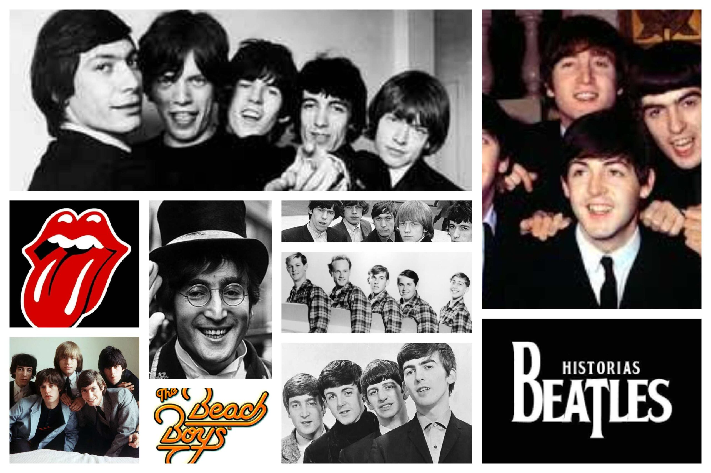
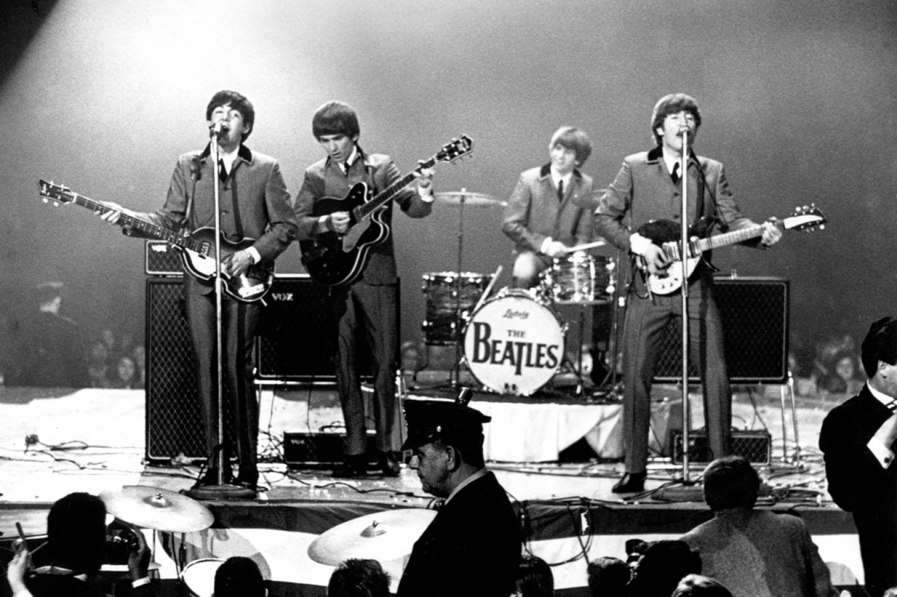

Historia do Rock and Rolll
Rock and roll nos anos 60
A década de 1960 foi um período de grandes mudanças sociais e culturais. A juventude, especialmente nos Estados Unidos e no Reino Unido, começou a se rebelar contra as normas conservadoras estabelecidas pelos adultos. O movimento hippie, os direitos civis, o feminismo e a luta contra a Guerra do Vietnã foram algumas das questões que impulsionaram uma nova forma de pensar e agir. A música, e o rock em particular, se tornou uma voz ativa para expressar essas novas ideologias.
O movimento mais marcante para o rock na década de 1960 foi a chamada "Invasão Britânica". Bandas britânicas como The Beatles, The Rolling Stones, The Who, Beach Boys e The Kinks dominaram as paradas de sucesso dos Estados Unidos e, mais tarde, do resto do mundo. O som do rock britânico trouxe uma nova energia e uma abordagem mais agressiva ao gênero.
Na segunda metade dos anos 60, a música psicodélica ganhou destaque, especialmente com a ascensão do uso de substâncias alucinógenas e o movimento hippie. As músicas psicodélicas buscavam capturar a experiência psicodélica por meio de experimentações sonoras, letras abstratas e efeitos de estúdio inovadores.
Outro subgênero importante do rock nos anos 60 foi o folk rock, com a fusão do rock com a música folk americana. Bob Dylan foi uma das figuras mais influentes desse movimento, inicialmente com um som acústico e poético e, posteriormente, com o uso de guitarras elétricas, especialmente após o famoso festival de Newport em 1965.
